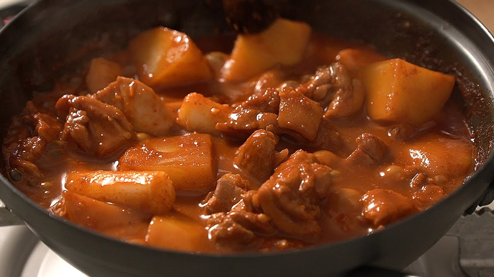

<!DOCTYPE html>
<html lang="en"></html>

<head>
    <meta charset="UTF-8">
    <title>Korean Braised Spicy Chicken</title>
</head>

<body>
    <h1>Korean Braised Spicy Chicken</h1>
    <h1></h1>

    <h2>Description</h2>
    <p>The Korean Braised Spicy Chicken is a kind of stew/soup that is cooked with chicken, vegetables and spicy broth. Not only is it delicious, but it is so simple and easy to make that it makes 
        me feel ashamed of myself for eating takeout for most of my early twenties. I should probably cook more often. 
    </p>

    <h2>Ingredients</h2>
    <p><u><strong>Contents</strong></u></p>
    <p><ul>
        <li>chicken thigh (500g)</li>
        <li>1 potato</li>
        <li>1/4 onion, leeks</li>
    </ul></p>

    <p><u><strong>Seasoning</strong></u></p>
    <p><ul>
        <li>2 TSP sugar</li>
        <li>2 TSP red pepper flakes</li>
        <li>4 TSP soy sauce</li>
        <li>1 TSP minced garlic</li>
        <li>1/2 TSP gochujang (red chili paste)</li>
        <li>black pepper to taste</li>
    </ul></p>

    <h2>Steps</h2>
    <p><ol>
        <li>Chop the chicken and potato into bite size pieces, and put into the pot</li>
        <li>Add all the seasoning ingredients</li>
        <li>Boil until the potatos are fully cooked. Then chop the onion and leeks and add to the pot</li>

    </ol></p>

    <h2>YouTube</h2>
    <a href="https://www.youtube.com/watch?v=G05-HT71VDI">Korean Braised Spicy Chicken | Dak-bokkeum-tang -One Meal a Day</a>
</body>